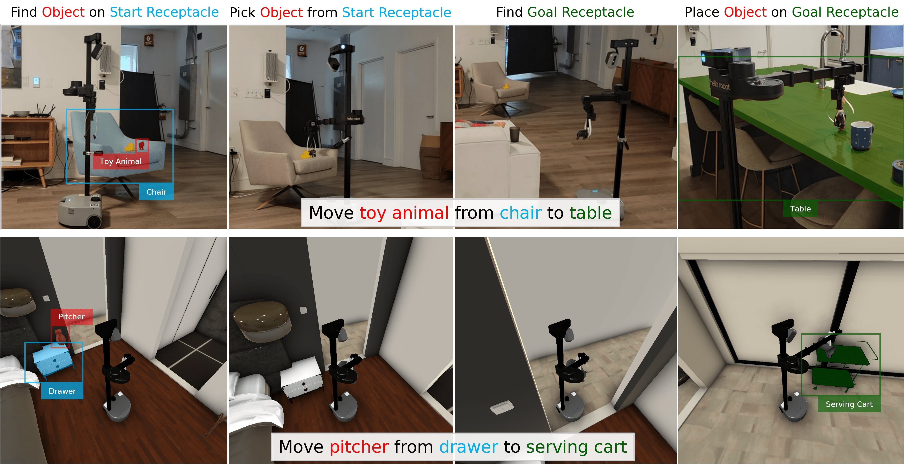
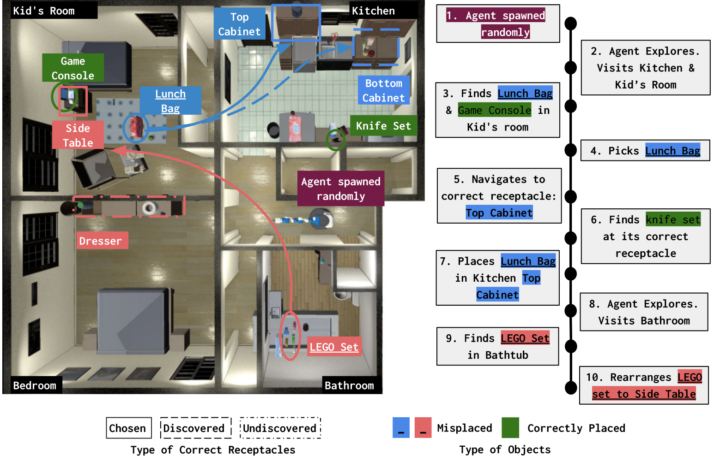
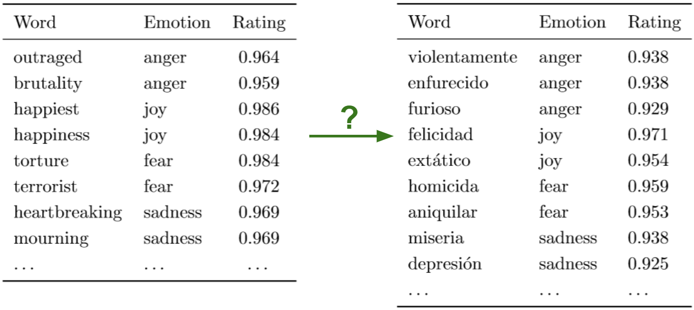
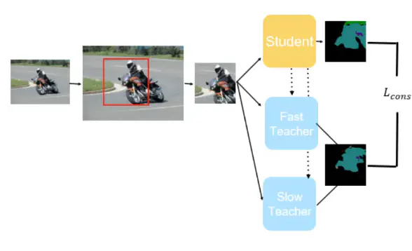
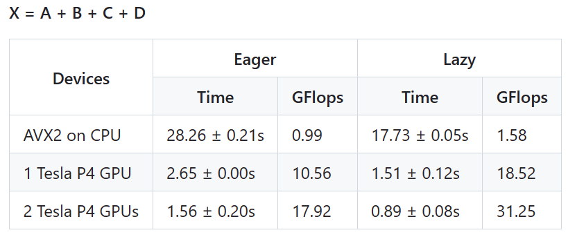
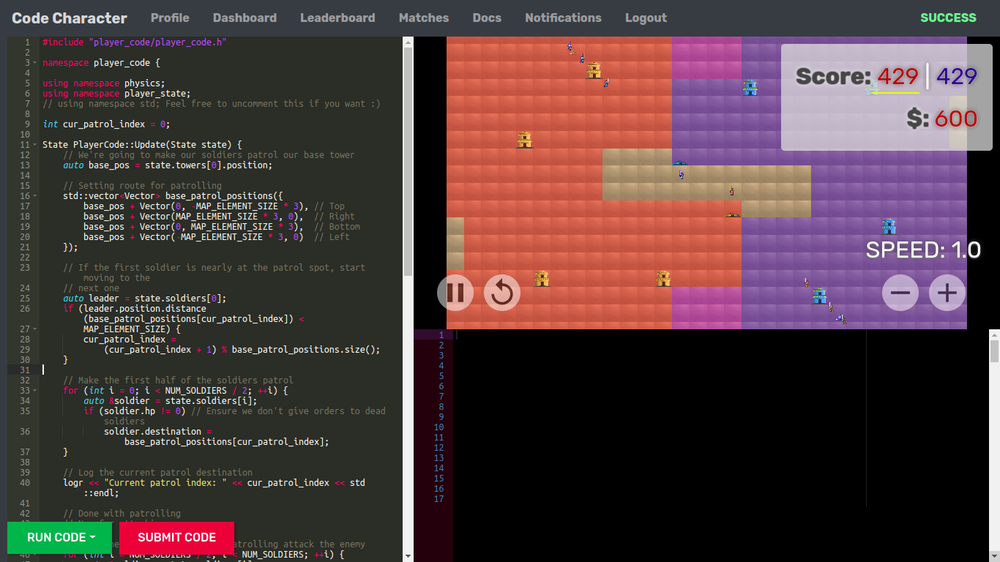

I'm a robotics machine learning engineer at Tesla, working on Optimus, the humanoid robot. Previously, I was a machine learning research engineer at MIT Lincoln Laboratory. I worked in the Homeland Decision Support Systems Group on applying ML research to problems of national security.
I graduated in May 2023 with a Master's in Computer Science from Georgia Tech. I was advised by Prof. Dhruv Batra.
I am interested in embodied AI — developing agents that can see, act and reason in the world. Specifically, I am interested in areas of embodied AI related to language, commonsense reasoning and generalization capabilities.
In a past life, I was a software engineer at Microsoft, working in the Bing Shopping team. I was initially a full-stack web developer and later moved into machine learning. I worked on applying natural language processing and information retrieval techniques to areas like query understanding and product ranking. I also did independent research on emotion analysis in low-resource languages.
I did my undergrad in Computer Science and Engineering at NIT Trichy. During that time, I interned at Amazon and Microsoft, working on Alexa and Cortana. My undergrad thesis focused on an empirical analysis of the effectiveness of different game tree search algorithms.


Publications(*=equal contribution)
|  |
HomeRobot: Open-Vocabulary Mobile ManipulationNeurIPS Competition Track 2023, CoRL 2023 Paper Project Page |
|  |
Housekeep: Tidying Virtual Households using Commonsense ReasoningPaper Project Page |
|  |
Cross-Lingual Emotion Lexicon Induction using Representation Alignment in Low-Resource SettingsPaper Project Page |
Projects
Improving the Student-Teacher Approach for Semi-Supervised Semantic SegmentationVideo |
 |
fasttensor: A C++ high-performance computing libraryCode |
 |
Chess AI: A self-learning chess artificial intelligenceCode |

|
Code Character: An online AI contestCode |
 |
Games
Some browser games I made a long, long time ago.